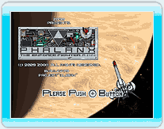
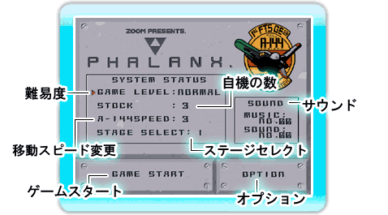
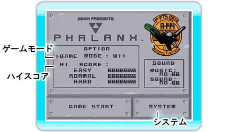

8 |
メニュー画面 |
 |
● タイトル画面
● メニュー画面 ゲームモードを変更したり、ゲーム中の音楽を聴くことができます。
●SYSTEM STATUS-システムステータス  ・GAME LEVEL-ゲームの難易度調整です。 EASY、NORMAL、HARDの三段階になっています。 初めての人はEASYから挑戦してみましょう。
・STOCK-自機の数を１機～５機まで変更できます。
・A-144 SPEED-自機の移動スピードを変更できます。4が最高スピードです。ゲームをスタートした後でもとで変更できます。
・STAGE SELECT-初めてゲームをプレイするときは表示されていませんが、ステージをクリアすると「STAGE SELECT」の項目が増え、選択したステージからあそぶことができます。
・SOUND-ミュージックモードです。ゲーム中の音楽が聴けます。
・GAME START-ゲームをスタートします。 ゲームオーバーになっても３回までコンティニューがあります。ゲームクリアを目指しましょう。
・OPTION-オプション画面に変わります。
●OPTION-オプション  ・GAME MODE-ゲームのモードをWii版にするかX68版にするかを変更することができます。
Wii版はX68版にオリジナルの追加要素を加え、曲もリメイクされているオリジナルリメイク版です。 X68版は効果音や敵をそのままにした復刻版になっています。 まずはX68版をプレイすることをおすすめします。
・HI SCORE-EASY、NORMAL、HARDそれぞれでゲームをクリアした時のハイスコアを見ることができます。 ・SYSTEM -SYSTEM STATUS画面に変わります。 |
 |
 |
 |